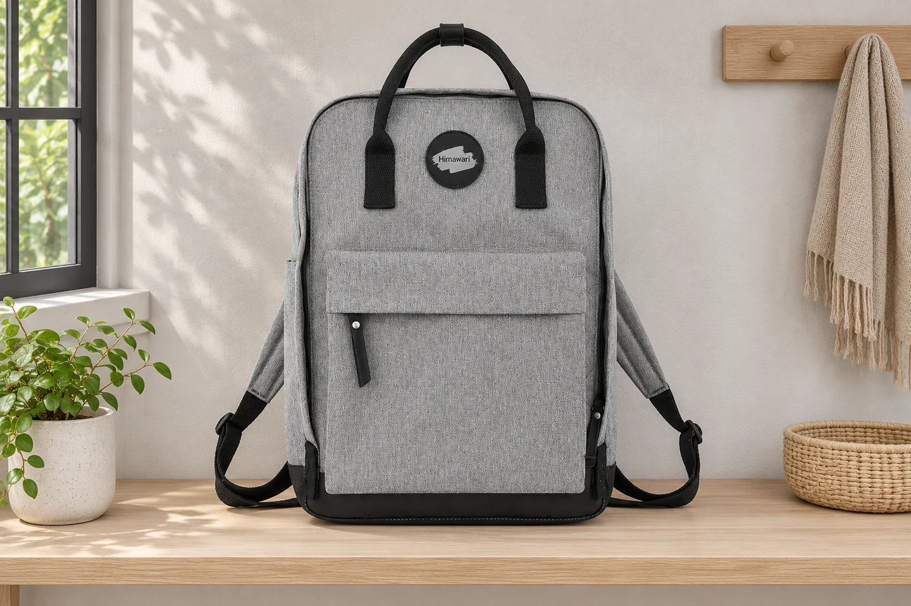
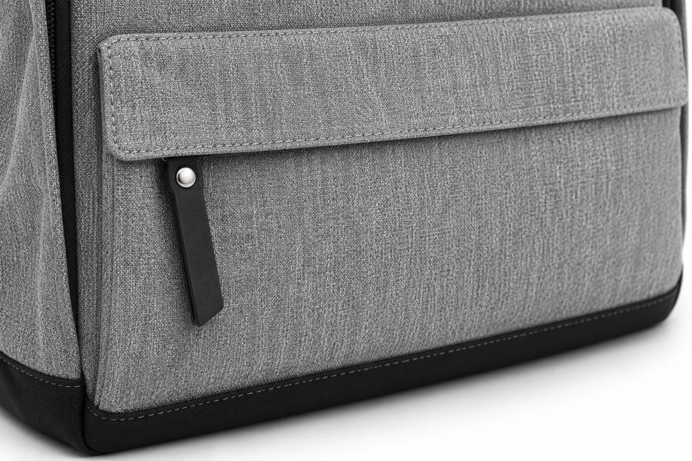
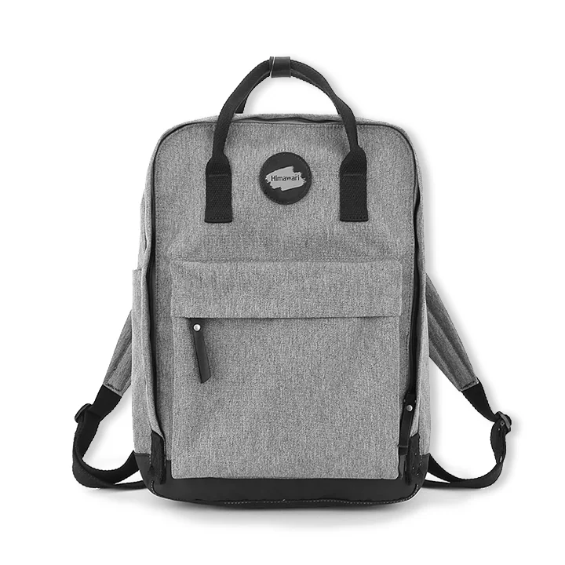

덮개에 가린 백팩 앞포켓 지퍼, 어떻게 닫힌 걸 확인할까

책상에서 백팩의 앞포켓을 닫은 뒤 들어 보니 손잡이만 겉에 남아 있습니다. 지퍼가 지나가는 선은 천 덮개 아래에 가려져서 언뜻 봐서는 닫힌 정도를 알기 어렵습니다. No.1084H 그레이가 이런 모양의 예입니다. 실제 제품 사진에서 회색 앞포켓의 위쪽 천이 가로로 길게 놓이고 그 아래로 검은 손잡이가 내려옵니다. 사진으로 알 수 있는 것은 손잡이와 덮개의 위치입니다. 끝까지 닫혔는지 판단하려면 가방을 자주 쓰는 자세에서 한 번 더 확인해야 합니다.
검은 손잡이가 보이는 자리는 출발점입니다
가방의 앞판을 마주하면 밝은 회색 위에 검은 손잡이가 먼저 눈에 들어옵니다. 하지만 어느 쪽 끝에 손잡이가 있는지와 실제로 닫히는 방향은 따로 확인해야 합니다. 사진은 한 시점의 모양만 보여주니까요. 매장에서 실물을 볼 수 있다면 포켓을 비운 채로 손잡이를 짧게 움직여 어느 방향에서 입구가 벌어지는지 봅니다. 좌우를 기억할 때는 자신의 오른손과 왼손을 기준으로 정해 두면 사진 속 방향과 섞이지 않습니다. 가방을 몸 쪽으로 돌리면 검은 줄이 있던 자리가 달라 보입니다.
겉의 회색 천은 지퍼를 가리지만 손잡이가 닿는 면은 손끝으로 구별할 수 있습니다. 덮개의 아래쪽에 손가락 끝을 가볍게 대고 금속 머리나 손잡이가 이어지는 자리를 찾습니다. 덮개 전체를 들지 않아도 앞포켓이 끝나는 봉제선과 손잡이 사이에 간격이 남는지 볼 수 있습니다. 다만 손잡이 꼬리가 길면 옆으로 눕기도 합니다. 꼬리 끝만 보았을 때는 지퍼 머리가 그보다 가운데에 있을 수 있습니다. 닫힘을 확인하려면 늘어진 끝보다 지퍼를 움직이는 머리 가까이에 손을 댑니다.

덮개 아래를 볼 때는 가방을 조금 낮춰봅니다
서 있는 가방을 위에서 내려다보면 가로로 눕는 덮개가 입구를 가립니다. 지퍼를 쓸 때마다 덮개를 들어 올리면 손이 두 번 움직입니다. 가방을 의자에 내려놓거나 자신의 눈높이를 조금 낮춰 덮개 아래와 포켓의 양 끝을 한 번에 볼 자리를 찾습니다. 옆에서 비친 빛을 받으면 지퍼 머리와 천이 맞닿은 곳이 드러날 수 있습니다. 그 상태에서 지퍼 끝에 빈 입구가 남아 있는지 보는 편이 손잡이 위치만 기억하는 것보다 확실합니다.
덮개를 손으로 약간 들어야 한다면 손잡이가 지나가는 자리를 먼저 비웁니다. 천을 붙잡고 있는 손으로 지퍼 머리까지 누르면 평소와 달리 손잡이가 무겁게 느껴질 수 있습니다. 천을 아주 조금 젖힌 뒤 반대 손으로 지퍼를 움직여봅니다. 손을 놓고 덮개가 원래 위치로 돌아온 뒤에도 포켓이 벌어지지 않는지 확인합니다. 천이 접혀 손끝에 걸렸다면 손잡이를 끝까지 보내기 전에 그 부분을 펴는 편이 좋습니다. 덮개를 세게 쓸어 눌러서 지퍼를 닫으려 할 이유는 없습니다.
지퍼 머리가 끝에 있는데 틈이 보인다면
무엇을 넣었는지 살펴야 할 차례입니다. 작은 파우치의 모서리나 장갑 끝이 입구 근처에 남으면 덮개 아래에서 천이 들려 보일 수 있습니다. 한 손으로 가방을 받치고 다른 손으로 그 내용물을 포켓의 아래쪽에 내려봅니다. 몸판을 누를 때마다 지퍼 머리가 끝으로 더 움직인다면 내용물이 여밈 가까이 붙었던 신호일 수 있습니다. 여유가 생긴 뒤에도 틈이 같은 자리에 남으면 포켓을 비운 상태로 다시 닫아봅니다.
포켓 안이 빈 상태에서도 지퍼가 같은 지점에서 자꾸 막히면 끝까지 여러 번 힘주어 당기지 않습니다. 덮개 뒤에 겉감이나 안감이 겹쳐 들어갔는지 먼저 살펴봅니다. 손으로 정리할 수 있는 천이라면 입구에서 치웁니다. 지퍼 부품에 손상이 보이면 사진을 남겨 제품 문의에 사용할 수 있습니다. 손잡이가 멈춘 자리를 사진에 담고 움직였던 방향도 함께 설명합니다.
덮개를 가볍게 놓아 준 뒤에는 가방을 들어 세워 방금 보였던 틈을 다시 살펴봅니다. 눕혀 둔 가방에서는 천이 지퍼 위에 고르게 놓여 있었어도 세우면 한쪽에 주름이 잡힐 수 있습니다. 거울 앞에서 확인할 때처럼 정면만 보지 말고 가방을 조금 돌려 보세요. 덮개와 지퍼가 서로 다른 층에 놓여 있음을 알면 덮개가 고르지 않은 모습과 지퍼가 덜 닫힌 상태를 구별하는 데 도움이 됩니다.

포켓을 닫고 바로 멜 때는 끝 확인을 한 번 넣습니다
외출 직전에는 가방을 든 채로 포켓을 닫기 쉽습니다. 어깨에 멘 뒤에는 덮개 아래가 보이지 않으므로 짐을 넣은 손으로 지퍼를 닫고, 머리가 끝 봉제선 가까이 왔는지를 같은 손끝으로 느껴봅니다. 다른 손에 물건이 많다면 몸에 가방을 띄워 들 필요는 없습니다. 안정적인 자리에 가방을 내려놓고 한쪽 끝을 볼 수 있게 돌려 확인합니다. 서둘러 당겼다면 포켓 끝 봉제선 가까이까지 손잡이가 왔는지 손끝으로 다시 확인해야 할 수 있습니다.
구매 전에 확인할 때도 같은 방법을 쓸 수 있습니다. No.1084H의 외부 크기 28.5 × 39 × 12 cm에는 앞포켓을 가리는 천의 폭이나 지퍼가 열리는 길이가 따로 나와 있지 않습니다. 사진에서 옷과 가방 색을 고른 뒤 자주 여는 포켓은 옆 각도와 닫힌 사진을 비교해 보세요. 가방을 한 손에 들었을 때 손잡이가 눈에 잘 띄더라도 닫히는 끝을 찾는 동작까지 쉬운지는 직접 봐야 알 수 있습니다. 평소 넣는 물건 하나를 생각하며 포켓을 닫는 마지막 손동작을 살펴보면 어떤 덮개가 자신에게 맞는지도 판단하기 편합니다.